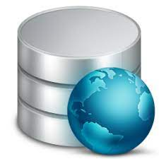

Hypertext Preprocessor (PHP) Una URL es una ruta o dirección para poder localizar una página web, imagen, servidor etc. en su navegador y éste envía un petición al servidor webUn servidor web es la maquina o computador donde se almacena una página web.. El servidor lee la página PHP (la interpreta). Envía al navegador del usuario un documento compilado en formato HTMLHTML es un lenguaje que se emplea para el desarrollo de páginas web. Existen diferentes formas de realizar una conexión a la base de datos, dependiendo la versión de PHP.La versión de un software o tecnología, es un número que se le asigna para indicar su nivel de desarrollo. Generalmente en cada nueva versión se han realizado mejoras a la tecnología. A partir de la versión 5.5.0 de PHP, se utiliza una extensión llamada mysqli (mysql improved), o como a veces se le conoce, la extensión de MySQL mejorada. Las extensiones son funcionalidades adicionales sobre las funcionalidades propias de PHP. En este caso la extensión mysqli nos provee mecanismos o funciones para conectarnos de manera sencilla a través de unas cuantas instrucciones a la Base de datos. La instrucción que nos permitirá crear un enlace, es decir, crear la conexión inicial con la base de datos utilizando la extensión mysqli es la siguiente:
Donde,
|
Ejemplo:
|